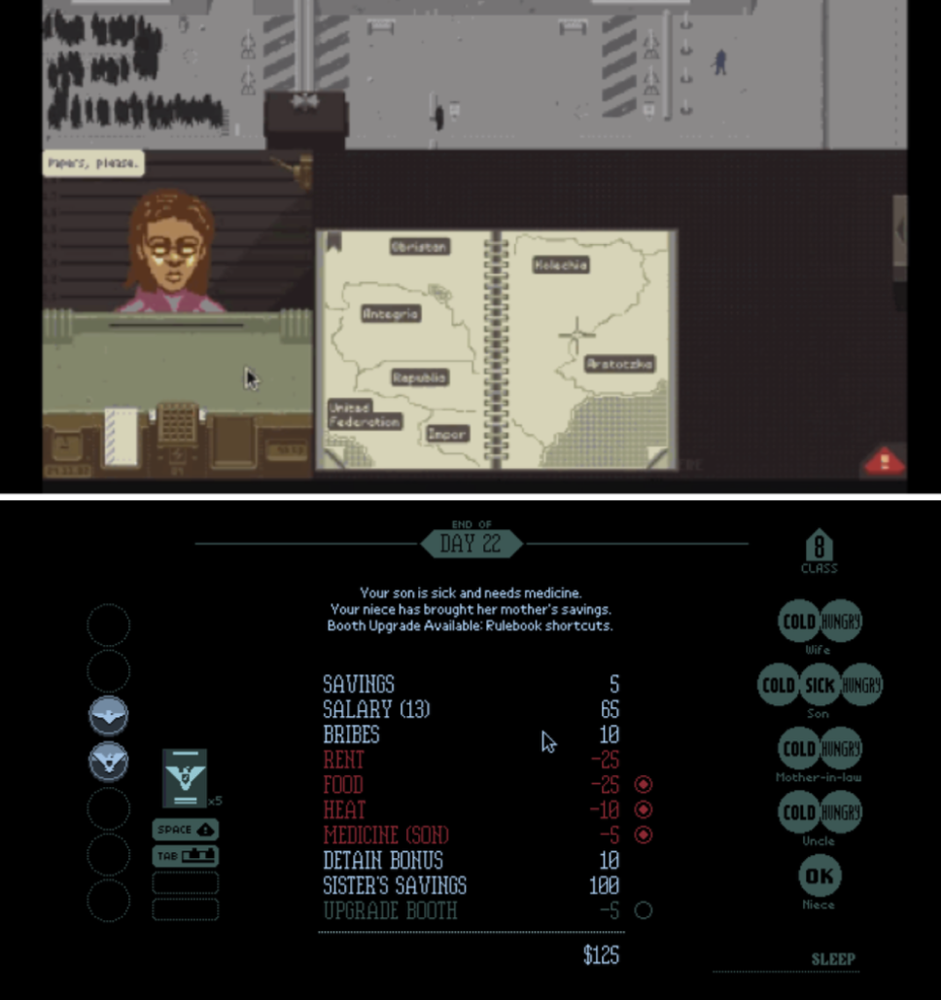
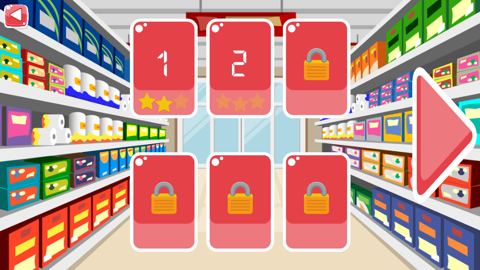
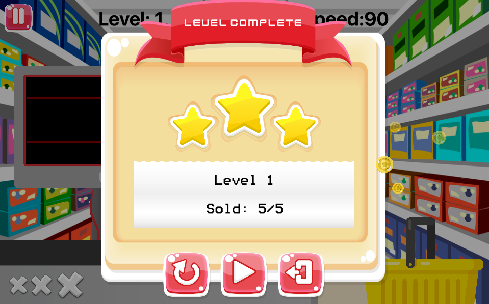

Agenda
- Warum habe ich ein Spiel entwickelt?
- Vom Prototyp zum fertigen Spiel
- Zahlen & Fakten
- Lessons learned
- Ausblick und Fazit
Warum habe ich ein Spiel entwickelt?
Beruf: Softwareentwickler
Hobby: Gamer
Vom Prototyp zum fertigen Spiel
Die Spielidee

- 2D-Spiel
- „Paper‘s Please“ an der Supermarktkasse
- Spielcharakter: Arme Hausfrau
- Nach jedem Tag an der Kasse, muss man sein Geld verteilen (Essen, Miete, Medizin, etc.)
Marktanalyse
- Es gibt unzählige Supermarktkassen-Spiele, oft sehr kindlich
- Meistens spielt das Kassieren eine Hauptrolle, also etwas den richtigen Geldbetrag zurückgeben
- Zwei Apps gefunden, die die Spielmechanik beinhalten, die ich mir vorgestellt habe
"Konkurrent 1": Crazy Market
Kostenlos, 2D, In-App Käufe, Japano-Style, Level-basiert
"Konkurrent 2": Checkout Challenge
Mittlerweile nicht mehr verfügbar, Kostenlos, 3D, Arcade-Modus
Inspiration: Fruit Ninja
Viele Spielmodi, Arcade-Modus: 3 Leben, Highscore-Jagd
Ergebnisse der Marktanalyse
- Spielname: "Supermarket Challenge"
- Darstellung: 2D
- Spielmechanik: "Fruit Ninja" meets "Crazy Market" meets "Checkout Challenge"
Prototypen-Entwicklung
- Start: Weihnachten 2016
- Unity als Engine, da sehr bekannt und umfangreich
- Entwicklungszeit (inkl. Einarbeitung): ~80h
Januar 2017
Entwicklungsstart
Meine Erwartungen:
- Finanzieller Erfolg
- Große, wiederkehrende Spielerbasis
- Skalierbares Spielprinzip
- Qualitativ hochwertiges Spiel
- Release innerhalb eines Jahres in App Stores
- Teamgröße: 1 Entwickler (ich) + evtl. 1 Designer
Goodbye Unity
- Nicht-wartbarer Spaghetti-Code des Prototypen
- Keine Architektur und somit nicht skalierbar
- Unity IDE zu komplex
- Textbasierte Architektur schwer realisierbar mit Unity
Mitte Januar 2018
Neue Game-Engine Suche...
Sieger: Corona SDK
- 2D-Engine
- Cross-Plattform (iOS, Android, Desktop-Applikationen, Smart TVs)
- Kostenlos (mit wenigen Einschraenkungen)
- Textbasiert mit Lua als Skriptsprache
- Corona Simulator mit Live-Testing
- Gute Einstiegsbeispiele
- Integrierte Monetarisierungsoptionen
Entwicklungstools
- Atom bzw. Visual Code als Texteditor
- Trello als Projektmanagement-Tool
- Gimp & Inkscape zur Bildbearbeitung
- Code in privatem Bitbucket-Repository
Komponenten-basierte Architektur
scenes
* game
- lib
scanner.lua
supermarket-basket.lua
item.lua
...
* menu
- images
- sounds
- menu.lua
* game-over
* ...
Mitte Januar 2018
Grundlegende Spielmechanik implementiert
Anfang Februar 2018
UX-Anpassungen, Tutorial, Menüs, etc.
Anfang März
Erste Beta-Version
Beta-Feedback:
- Kein gutes/stimmiges Design
- Schwierigkeitsgrad zu einfach
Mitte März
Freund von mir designt einige Grafiken und berät mich in Design-Fragen
Release 1
Features: Arcade-Modus
Release-Plattformen: iOS, Android
Datum: 06.05.201
Release 2
Features: Level-Modus, einfacherer Arcade-Modus
Release-Plattformen: iOS, Android
Datum: 21.12.2017
Level Modus Screenshots


Investierte Stunden
~500 Stunden / ~21 Tage
Timing (Time Tracking Software für OS X)
Time Tracking: Maniac (Windows), Time (OS X)
Einnahmen
~1€, ~10€, ~100€, ~1000€?
Lösung: ~1€
1. Keep it simple: Setz dir kleine (realistische) Ziele
In meinem Fall: Erstmal Arcade-Modus ohne Story-Elemente
2. Hilf dir selber, lern alles
Grafik, UX, Game-Design, Code, etc.
3. Nutze kostenlose Assets
Spart am Anfang viel Zeit und Geld
4. So früh wie möglich Prototyp(en) entwickeln
5. Sei aktiv in sozialen Netzwerken
Hilft beim Aufbauen einer aktiven Spieler-Community
Trailer & Teaser sind ein gutes Lockmittel
5. Fühl dich wohl mit deiner Game-Engine
Lass dich nicht von großen Namen wie Unreal Engine und Unity locken ;-)
Fazit
- Hat Spaß gemacht
- Finanziell nicht erfolgreich
- Keine wiederkehrende Spielerbasis
Ausblick
Entwicklungsstop, auf zu neuen Projekten 😋
Danke
Links:
- Supermarket Challenge (iOS)
- Supermarket Challenge (Android)
- Folien auf GitHub
- Meine Website